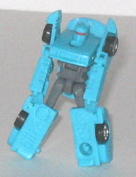
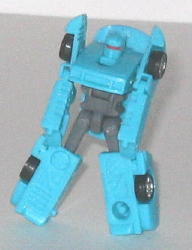
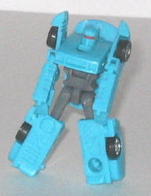
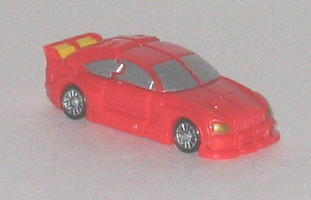

Backtrack
Backtrack
 

Difficulty of Transformation : Very Easy
Color Scheme : Glittery moderately light blue, gray, and some black, gunmetal gray, flat dull red, yellow, and dark blue
Individual Rating : 8.0
Street
Speed Team (Cybertron)
Allegiance
: Minicon
Size
: Mini-Con (3-pack)
Homeworld
: Speed Planet
Overall Rating
: 7.0
(NOTE: Because this set is a repaint, this
is not a full-blown review. This mainly covers any changes made to the
set and the color scheme, and merely compares it to the Armada Street Speed
Team. For a review on the mold itself, read the review of the Armada Street
Speed Team
here
.)
Backtrack

Difficulty of Transformation
: Very
Easy
Color Scheme
: Glittery moderately
light blue, gray, and some black, gunmetal gray, flat dull red, yellow,
and dark blue
Individual Rating
: 8.0
Yes, the Street Speed
Minicon that was formerly named Oval is now named Backtrack and visa versa,
for some reason. Well, regardless, the new color-of-choice for this mold
is light blue. It goes somewhat well with the gray and black, although
the mold's previous color choices of black and orange worked better, I
think. The glitter dispersed throughout the light blue helps to make it
a more attractive color, however, and the dark blue car windows go really
well with the main color. The red optic band in robot mode is also a nice
contrasting color.
As with all the Cybertron
Street Speed Minicons, Backtrack has had a few mold changes made to his
car mode to help him look more futuristic and thus fit in with Speed Planet.
Nearly all of the visible car parts have been remolded to some extent,
but the major changes are: the rear-facing window has been replaced with
some sleek tech detailing and exhaust vents; a (relatively) large engine
has been added to the rear half; several grooves have been added to the
car doors; and the front and rear headlights have been smoothed considerably
(and in some cases removed) to give the front and back a sleeker look.
Overall, it works; Backtrack definitely looks like he could out-drive his
mold's previous versions.
Oval
Difficulty of Transformation
: Medium
Color Scheme
: Glittery yellow, gray,
and some black, gunmetal gray, bluish black, light orange, and light sky
blue
Individual Rating
: 6.6
If you've been reading
my reviews for a while, you know by now that I'm not a big fan of a non-dull
shade of yellow being used on Transformers, so it should come as no surprise
that I think Cybertron Oval has easily the weakest of the mold's three
color schemes. He's pretty much all yellow except for some gray in robot
mode and some black windows and tires, so it's not all that inventive of
a color scheme, either. The glittery effect does make the yellow look better
than it would have otherwise, however, and the light blue robot optics
and orange headlights look fairly good against the yellow.
The noticeable mold
changes to Oval to make him more "futuristic" are as follows: there's less,
but more angular, detailing on the sides of the car mode; a engine now
pokes out of the front hood area; a siren has been added to his roof; and,
like Backtrack, his headlights and taillights have been smoothed considerably
or removed, and the few that do remain are more futuristic in their styling.
Overall, though, I think I like the unaltered version of this mold better,
as the headlights look cooler and a yellow unpainted siren on a yellow
sportscar looks rather hokey, at best. It should've at least been painted,
c'mon...
Spiral

Difficulty of Transformation
: Easy
Color Scheme
: Light glittery red,
gray, and some black, gunmetal gray, silver, dull yellow, light sky blue,
and metallic bronze
Individual Rating
: 6.3
Spiral, the only member
of the team who retains his original name, now sports a mostly light red
color scheme. Like his fellow member Backtrack, Spiral's scheme is alright,
certainly not horrible, but it doesn't quite measure up to the other two
paint jobs his mold has had. The red could stand to be a shade or two darker,
though again, the glitter makes it look a little better. The bronze, yellow,
light blue, and silver detailing used goes rather well with the red. The
gray also makes a decent, if uninventive secondary color.
Here's the changes made
to Spiral's mold: the rear spoiler has some added detailing; the rear-facing
windows have been replaced with several grooves; and the headlights and
tailights have been simplified and made more futuristic, though to a lesser
extent than his teammates'.
The Cybertron Street Speed Team, though certainly not a bad team, probably has the worst overall color scheme of the team's three various paint jobs. The new detailing helps them seem a bit "newer" and more exciting, but you're probably better off with the original Armada Street Speed Team.
Review by Beastbot